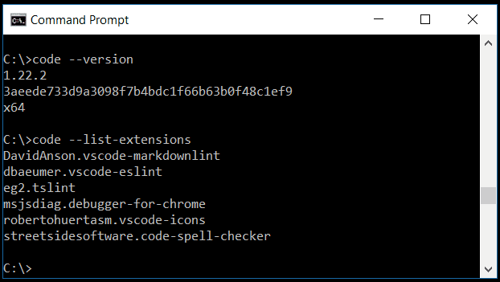
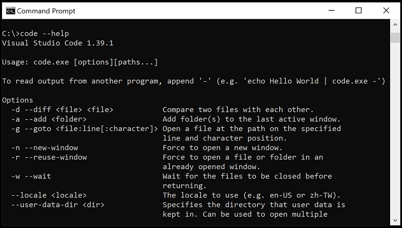
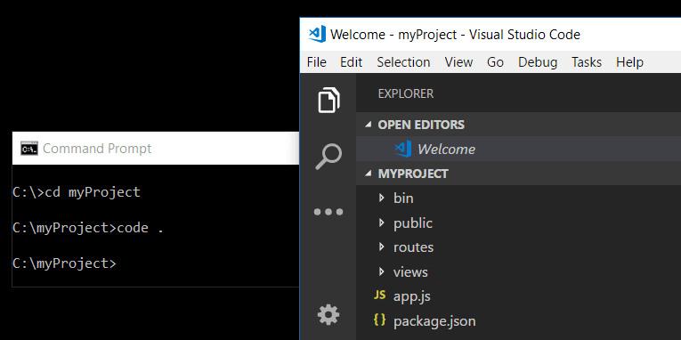
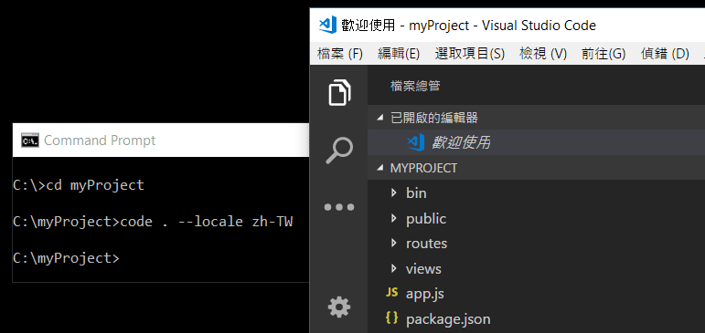
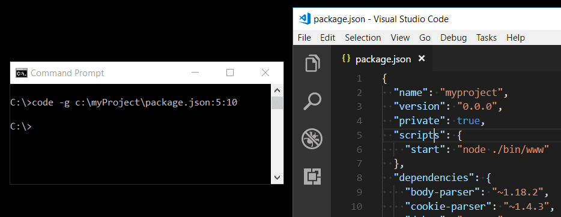
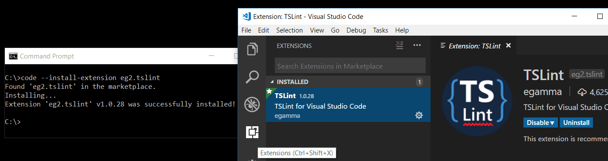
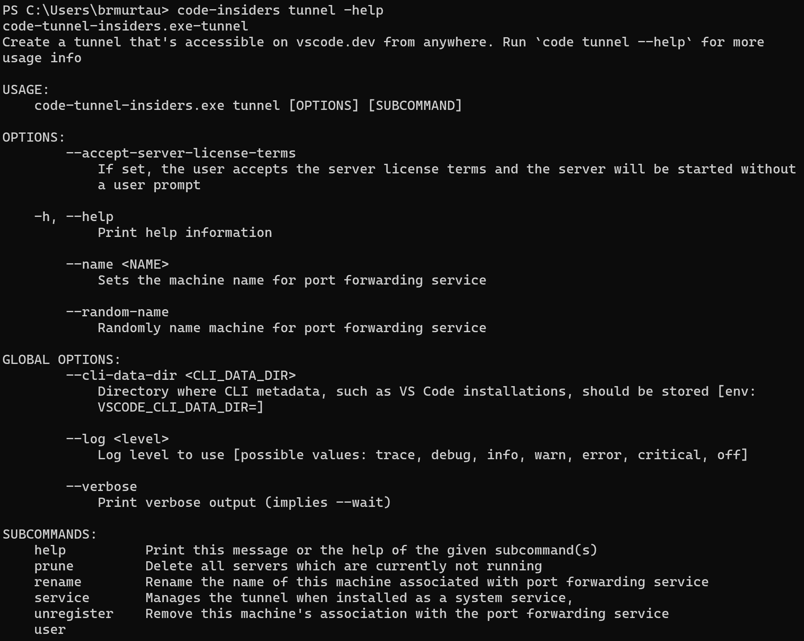
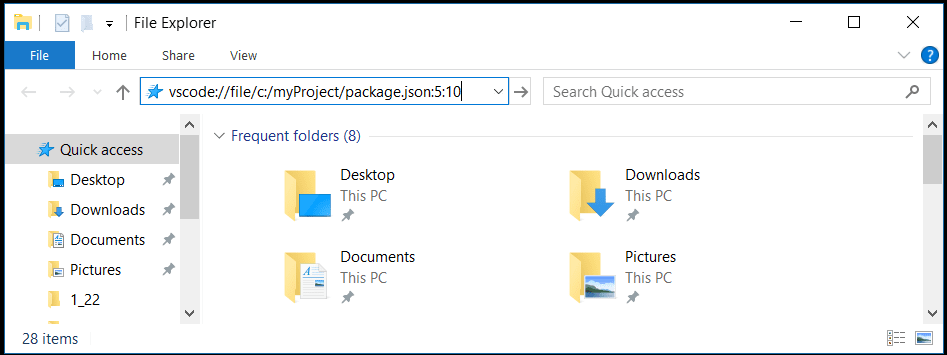

命令行界面（CLI）
Visual Studio Code 内置了一个强大的命令行界面，可让您控制编辑器的启动方式。您可以通过命令行选项（开关参数）打开文件、安装扩展、更改显示语言以及输出诊断信息。

如果您正在寻找如何在 VS Code 中运行命令行工具，请参阅集成终端。
命令行帮助
要获取 VS Code 命令行界面的概览，请打开终端或命令提示符并输入 code --help。您将看到版本、使用示例以及命令行选项列表。

从命令行启动
您可以从命令行启动 VS Code，以快速打开文件、文件夹或项目。通常，您在文件夹的上下文中打开 VS Code。为此，请从打开的终端或命令提示符中，导航到您的项目文件夹并输入 code .：

[!NOTE]
macOS 用户必须先运行一个命令（Shell 命令：在 PATH 中安装 "code" 命令），将 VS Code 可执行文件添加到 PATH 环境变量中。请参阅 macOS 安装指南获取帮助。
Windows 和 Linux 安装程序应将 VS Code 二进制文件位置添加到您的系统路径中。如果不是这种情况，您可以手动将该位置添加到 Path 环境变量（Linux 上为 $PATH）中。例如，在 Windows 上，VS Code 二进制文件的默认位置是 AppData\Local\Programs\Microsoft VS Code\bin。要查看特定平台的安装说明，请参阅安装。
[!NOTE]
如果您使用的是 VS Code Insiders 预览版，则使用 code-insiders 启动 Insiders 版本。
核心 CLI 选项
以下是在命令行通过 code 启动 VS Code 时可以使用的可选参数：
参数|描述
------------------|-----------
-h 或 --help | 打印使用说明
-v 或 --version | 打印 VS Code 版本（例如 1.22.2）、GitHub 提交 ID 和架构（例如 x64）。
-n 或 --new-window| 打开一个新的 VS Code 会话，而不是恢复上一个会话（默认行为）。
-r 或 --reuse-window | 强制在上次活动窗口中打开文件或文件夹。
- | 从标准输入读取并在 VS Code 中打开（例如 'echo Hello World | code.exe -'）
-g 或 --goto | 与 file:line{:character} 配合使用时，在指定行和可选的字符位置打开文件。提供此参数是因为某些操作系统允许文件名中包含 :。
-d 或 --diff | 打开文件差异编辑器。需要两个文件路径作为参数。
-m 或 --merge | 通过提供两个修改版本的文件路径、两个修改版本的共同原始版本路径以及保存合并结果的输出文件路径，来执行三方合并。
-w 或 --wait | 等待文件关闭后才返回。
--locale | 为 VS Code 会话设置显示语言（区域设置）。（例如 en-US 或 zh-TW）

打开文件和文件夹
有时您会想要打开或创建文件。如果指定的文件不存在，VS Code 将为您创建它们以及任何新的中间文件夹：
code index.html style.css documentation\readme.md对于文件和文件夹，您都可以使用绝对路径或相对路径。相对路径是相对于您运行 code 的命令提示符的当前目录。
如果您在命令行中指定了多个文件，VS Code 将只打开一个实例。
如果您在命令行中指定了多个文件夹，VS Code 将创建一个包含每个文件夹的多根工作区。
参数|描述
------------------|-----------
file | 要打开的文件名称。如果文件不存在，将创建它并标记为已编辑。您可以通过用空格分隔每个文件名来指定多个文件。
file:line[:character] | 与 -g 参数配合使用。在指定行和可选的字符位置打开文件。
folder | 要打开的文件夹名称。您可以指定多个文件夹，将创建一个新的多根工作区。
--skip-add-to-recently-opened | 防止打开的文件和文件夹被添加到最近打开列表中。

选择配置文件
您可以通过 --profile 命令行界面选项使用特定的配置文件启动 VS Code。在 --profile 参数后传入配置文件的名称，然后使用该配置文件打开文件夹或工作区。以下命令行使用 "Web Development" 配置文件打开 web-sample 文件夹：
code ~/projects/web-sample --profile "Web Development"
如果指定的配置文件不存在，将创建一个具有给定名称的新空白配置文件。
使用扩展
您可以从命令行安装和管理 VS Code 扩展。
参数|描述
------------------|-----------
--install-extension | 安装或更新扩展。提供完整的扩展名称 publisher.extension 或 VSIX 文件的路径作为参数。要安装特定版本，请追加 @{version}。例如：vscode.csharp@1.2.3。使用 --force 参数可避免提示。使用 --profile 参数可为特定配置文件安装。
--uninstall-extension | 卸载扩展。提供完整的扩展名称 publisher.extension 作为参数。使用 --profile 参数可为特定配置文件卸载。
--disable-extensions | 禁用所有已安装的扩展。扩展仍会在扩展视图的已禁用部分中显示，但它们永远不会被激活。
--list-extensions | 列出已安装的扩展。可使用 --profile 参数列出特定配置文件的扩展。
--show-versions | 在使用 --list-extensions 时显示已安装扩展的版本。
--enable-proposed-api | 为扩展启用建议的 API 功能。提供完整的扩展名称 publisher.extension 作为参数。
--update-extensions | 更新已安装的扩展并退出。

从命令行开始聊天
您可以在 VS Code CLI 中使用 chat 子命令直接从命令行启动聊天会话。这使您能够在当前工作目录中使用提供的提示词打开聊天会话。
例如，以下命令为当前目录打开聊天并询问"查找并修复所有未类型化的变量"：
code chat Find and fix all untyped variableschat 子命令具有以下命令行选项：
-m、--mode：用于聊天会话的自定义代理。可用选项：ask、edit、agent或自定义代理的标识符。默认为agent。-a、--add-file：将文件作为上下文添加到聊天会话中。--maximize：最大化聊天会话视图。-r、--reuse-window：使用上次活动窗口进行聊天会话。-n、--new-window：打开一个空窗口进行聊天会话。
chat 子命令还支持通过在命令末尾传入 - 从 stdin 管道输入。例如：
python app.py | code chat why does it fail -高级 CLI 选项
有几个 CLI 选项有助于重现错误和高级设置。
参数|描述
------------------|-----------
--extensions-dir | 设置扩展的根路径。
在便携模式中被 data 文件夹覆盖。
--user-data-dir | 指定用户数据的存储目录。可用于运行多个独立的 VS Code 实例，每个实例具有独立的环境、设置和扩展。在以 root 身份运行时也很有用。
在便携模式中被 data 文件夹覆盖。
-s, --status | 打印进程使用情况和诊断信息。
-p, --performance | 启动时启用开发者：启动性能命令。
--disable-gpu | 禁用 GPU 硬件加速。
--verbose | 打印详细输出（隐含 --wait）。
--prof-startup | 在启动期间运行 CPU 分析器。
--upload-logs | 将当前会话的日志上传到安全端点。
--remote | 连接到远程开发环境。authority 指定远程连接，用于 WSL（wsl+）或 SSH（ssh-remote+）。
多根|
--add | 将文件夹添加到上次活动窗口以创建多根工作区。
--remove | 从上次活动窗口中删除文件夹以用于多根工作区。
隔离 VS Code 实例
默认情况下，VS Code 实例以下列方式共享环境变量：
- 如果这是第一个 VS Code 实例，则环境变量从父进程继承。
- 如果这不是第一个 VS Code 实例，则环境变量从已在运行的 VS Code 实例继承。
当您需要为不同的项目或构建配置使用不同的环境变量时，此行为可能会导致问题。例如，如果您正在处理两个需要不同 Node.js 版本或不同 PATH 设置的项目。
要使用单独的环境变量运行 VS Code 实例，请使用 --user-data-dir 选项为每个实例指定唯一的用户数据目录：
# 第一个实例，具有自己的环境
code ~/project1 --user-data-dir ~/vscode-data-project1
# 第二个实例，具有不同的环境
code ~/project2 --user-data-dir ~/vscode-data-project2每个具有不同 --user-data-dir 的实例将维护其自己的：
- 环境变量
- 设置和偏好
- 已安装的扩展
- UI 状态和布局
[!NOTE]
使用
--user-data-dir时，您需要为每个用户数据目录重新安装扩展，因为扩展是分开存储的。创建远程隧道
VS Code 与其他远程环境集成，变得更加强大和灵活。我们的目标是提供一个统一的体验，让您能够从统一的 CLI 管理本地和远程机器。
Visual Studio Code Remote - Tunnels 扩展允许您通过安全隧道连接到远程机器（如台式电脑或虚拟机）。隧道技术可以将数据从一个网络安全地传输到另一个网络。然后，您可以从任何地方安全地连接到该机器，无需 SSH。
我们已将功能内置于 code CLI 中，可以在远程机器上启动隧道。您可以运行：
code tunnel在远程机器上创建隧道。您可以通过 Web 或桌面 VS Code 客户端连接到此机器。
您可以通过运行 code tunnel -help 查看其他隧道命令：

由于您可能需要在无法安装 VS Code Desktop 的远程机器上运行 CLI，该 CLI 也可在 VS Code 下载页面上独立安装。
有关远程隧道的更多信息，请参阅远程隧道文档。
使用 URL 打开 VS Code
您还可以使用平台的 URL 处理机制打开项目和文件。使用以下 URL 格式来：
打开项目
vscode://file/{完整项目路径}/
vscode://file/c:/myProject/打开文件
vscode://file/{完整文件路径}
vscode://file/c:/myProject/package.json打开文件并定位到行和列
vscode://file/{完整文件路径}:line:column
vscode://file/c:/myProject/package.json:5:10打开设置编辑器
vscode://settings/setting.name
vscode://settings/editor.wordWrap您可以在浏览器或文件资源管理器等可以解析并重定向 URL 的应用程序中使用这些 URL。例如，在 Windows 上，您可以将 vscode:// URL 直接传递给 Windows 资源管理器，或通过命令行传递，如 start vscode://{完整文件路径}。

[!NOTE]
如果您使用的是 VS Code Insiders 版本，URL 前缀为 vscode-insiders://。
下一步
继续阅读以了解以下内容：
- 集成终端 - 在 VS Code 内部运行命令行工具。
- 基础编辑 - 学习 VS Code 编辑器的基础知识。
- 代码导航 - VS Code 让您快速理解和浏览源代码。
常见问题
'code' 不被识别为内部或外部命令
您的操作系统无法在路径上找到 VS Code 二进制文件 code。VS Code Windows 和 Linux 安装程序应将 VS Code 安装到您的路径上。请尝试卸载并重新安装 VS Code。如果 code 仍然找不到，请查阅 Windows 和 Linux 的特定平台安装主题。
在 macOS 上，您需要手动运行 Shell 命令：在 PATH 中安装 "code" 命令 命令（可通过命令面板 kb(workbench.action.showCommands) 访问）。请查阅 macOS 特定安装主题以获取详细信息。
如何从 VS Code 内部访问命令行（终端）？
VS Code 有一个集成终端，您可以在 VS Code 内部运行命令行工具。
我可以为 VS Code 指定设置位置以便拥有便携版本吗？
不能直接通过命令行指定，但 VS Code 有一个便携模式，可让您将设置和数据保存在与安装位置相同的位置，例如在 USB 驱动器上。
如何检测 shell 是否由 VS Code 启动？
当 VS Code 启动时，它可能会启动一个 shell 以获取"shell 环境"来帮助设置工具。这将启动一个交互式登录 shell 并获取其环境。根据您的 shell 设置，这可能会导致问题。例如，shell 作为交互式会话启动可能是意料之外的，而 VS Code 需要这样做以尝试将 $PATH 与用户创建的终端中的确切值对齐。
每当 VS Code 启动此初始 shell 时，VS Code 会将变量 VSCODE_RESOLVING_ENVIRONMENT 设置为 1。如果您的 shell 或用户脚本需要知道它们是否正在此 shell 的上下文中运行，您可以检查 VSCODE_RESOLVING_ENVIRONMENT 的值。